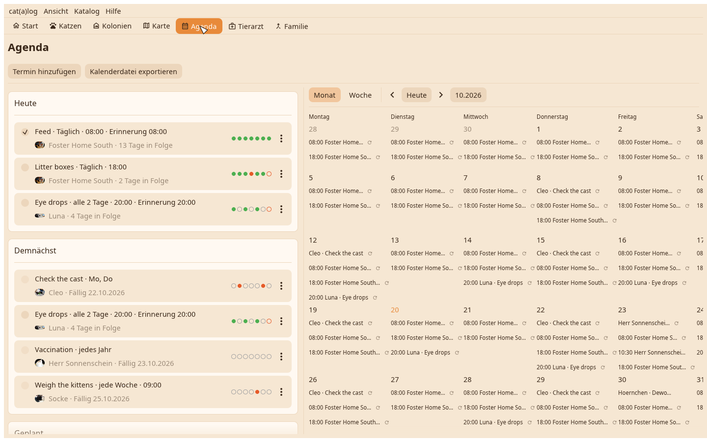
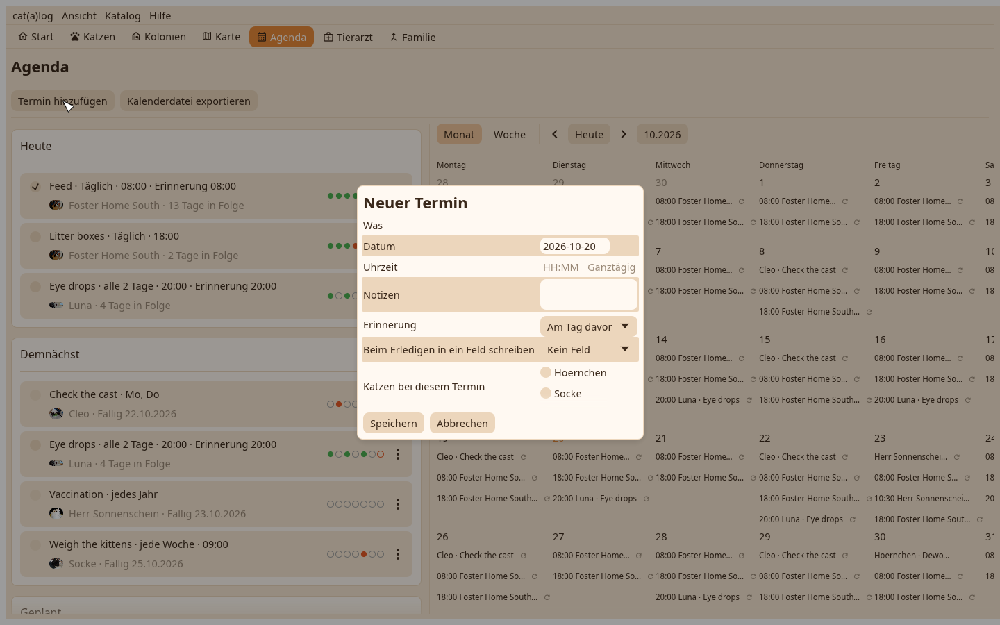

1. Die Agenda
Die Liste links, der Kalender rechts. Das Plus legt einen Termin, eine Erinnerung oder eine Aufgabe an.

2. Die Aufgabe
Für wen, was, wie oft als Optionen, eine Uhrzeit, eine Erinnerung. Speichern; die Aufgabe steht unter Heute mit ihrem Kästchen.
